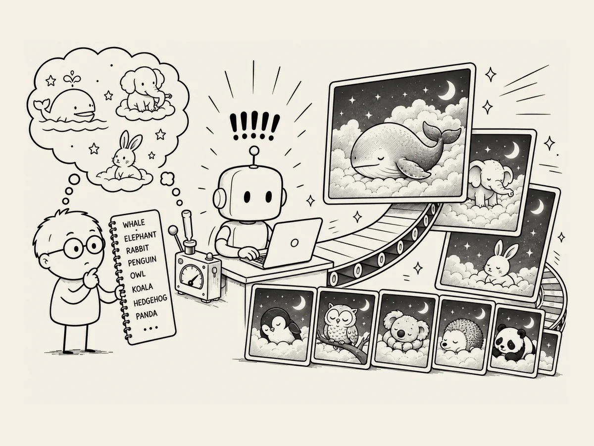

3.
Quand l’IA est lancée, autant continuer.
Quelles images les bébés devraient-ils regarder avant de s’endormir ?
J’y ai réfléchi.
L’image d’un animal mignon simplement allongé là me semblait un peu ennuyeuse.
Je voulais quelque chose qui ressemble à un rêve.
Quelque chose qui pourrait difficilement arriver dans la réalité.
Nager dans l’océan avec une baleine.
Marcher sur les nuages avec un éléphant.
Regarder les étoiles avec un lapin.
Je voulais donner l’impression qu’un enfant pouvait regarder l’image
et entrer directement dans son rêve.
J’ai dit à l’IA :
« Dessine une baleine endormie dans des nuages doux et moelleux. »
Un instant plus tard,
l’image de la baleine dessinée par l’IA est apparue.
Oh.
Une baleine, les yeux fermés,
dormait dans de gros nuages tout doux,
doucement éclairés par la lune.
C’était réussi.
Ces derniers temps,
l’IA est devenue bien meilleure pour dessiner.
Hmm.
J’aime bien.
J’avais remarqué quelque chose en travaillant avec l’IA.
Quand elle fait quelque chose de bien,
il faut continuer.
Si j’attendais avant de lui demander de dessiner à nouveau,
la même ambiance ne serait peut-être plus là.
Tout à coup,
je me suis senti pressé.
Cette fois, un éléphant.
Elle l’a dessiné.
Cette fois, un lapin.
Encore un.
Un pingouin, un hibou, un koala, un hérisson, un panda...
Les personnages apparaissaient un par un.
La distance entre imaginer quelque chose et le créer s’était raccourcie.
